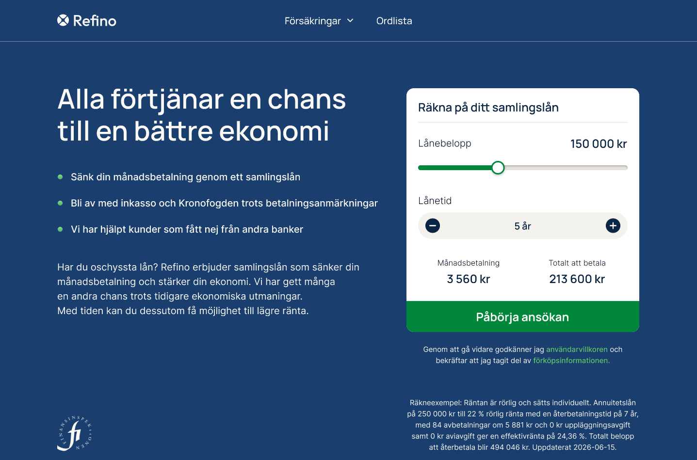
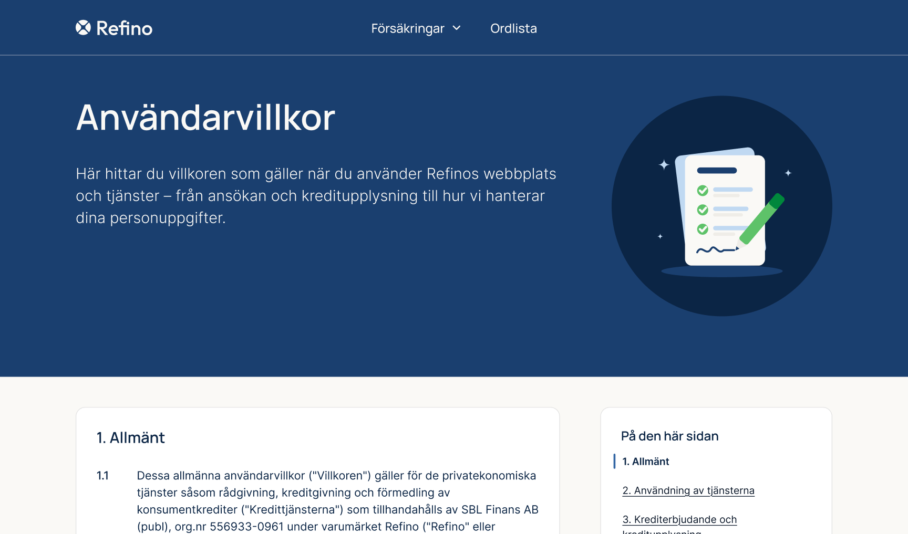
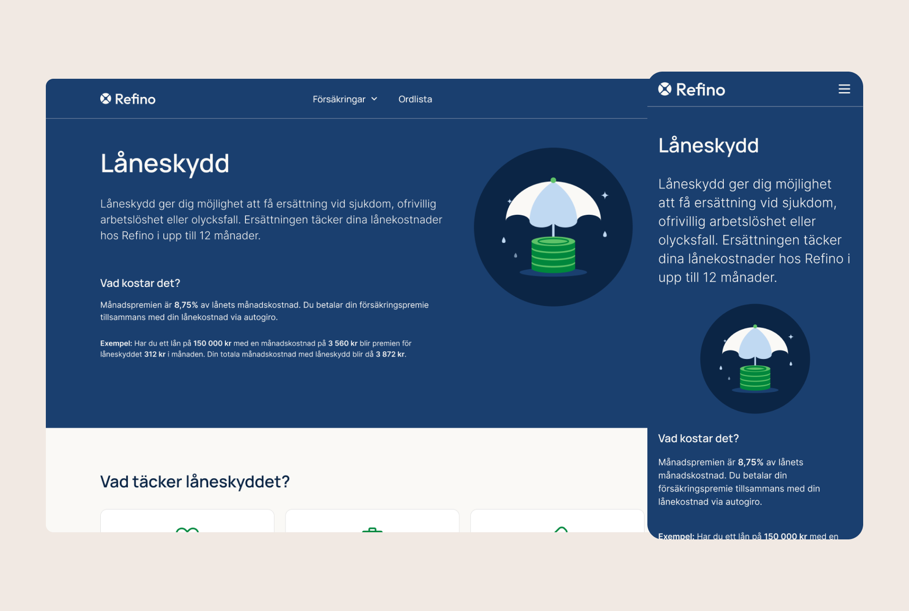

Refino
– Website & Loan Application
A new design for Refino, a Swedish loan broker, from the start page and insurance pages to the loan application. The new design went live on refino.se on 4 November 2026.
Published with Refino's approval.

01
The problem
Refino's old pages were hard to use for many of the people who need them most. Long financial and legal texts, weak structure and accessibility gaps made it hard to understand an offer, at a moment when users are already stressed about money. At the same time, the pages needed to rank well in search.
01
Accessibility
Make every page and step usable for people with different abilities, devices and levels of experience.
02
Cognitive load
Make long terms, insurance texts and financial words easy to scan and understand.
03
SEO without losing usability
Keep the text search engines need, without letting it bury what users came for.
02
The project
Refino helps people in Sweden compare and apply for private loans, and also offers loan protection and insurance. The service handles money, credit checks and personal data, so every page needs to feel calm, clear and trustworthy.
During my internship at Refino, another UX intern and I redesigned the main pages for desktop and mobile: the start page, Loan protection, Security insurance, a glossary, terms of use, a document archive, a complaints page and an accessibility statement, as well as the loan application. The redesign launched on refino.se on 4 November 2026.
03
The pages
Many of the pages carry long legal and financial texts. I broke them into cards with numbered points, short introductions and a table of contents, so users can find what they need without reading everything. The full text stays on the page for search engines, but users can scan the structure instead of reading it all.

04
The application
The loan application starts from the calculator on the start page. The user fills in their details (and an optional co-applicant), identifies with BankID (Sweden's national e-ID) and chooses their bank, so that account data can be shared through a third-party bank data service.
05
Details
1. A searchable glossary
Financial terms are collected in a glossary with search suggestions, a selected-term view and a clear empty state when nothing matches.
That way, words like effective interest rate don’t stand in the way of understanding an offer.
2. Readable legal pages
Terms of use, complaints and the document archive use cards, numbered points, a table of contents and clear links, so long legal text becomes easier to scan.
3 steps
From personal details to BankID and bank data – a short, guided application.
06
The design
The new design, live on refino.se since 4 November 2026, covers desktop and mobile with the same header, footer, icons and form components across every page.
